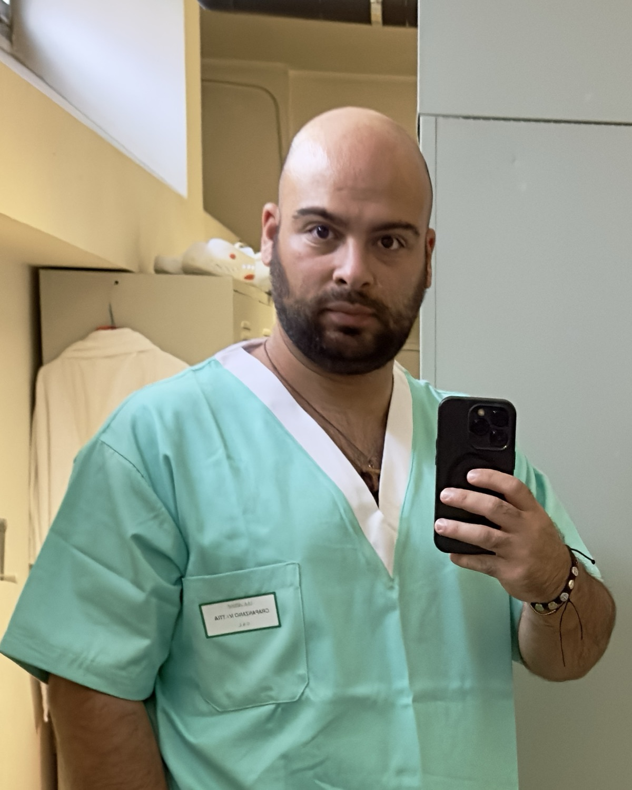
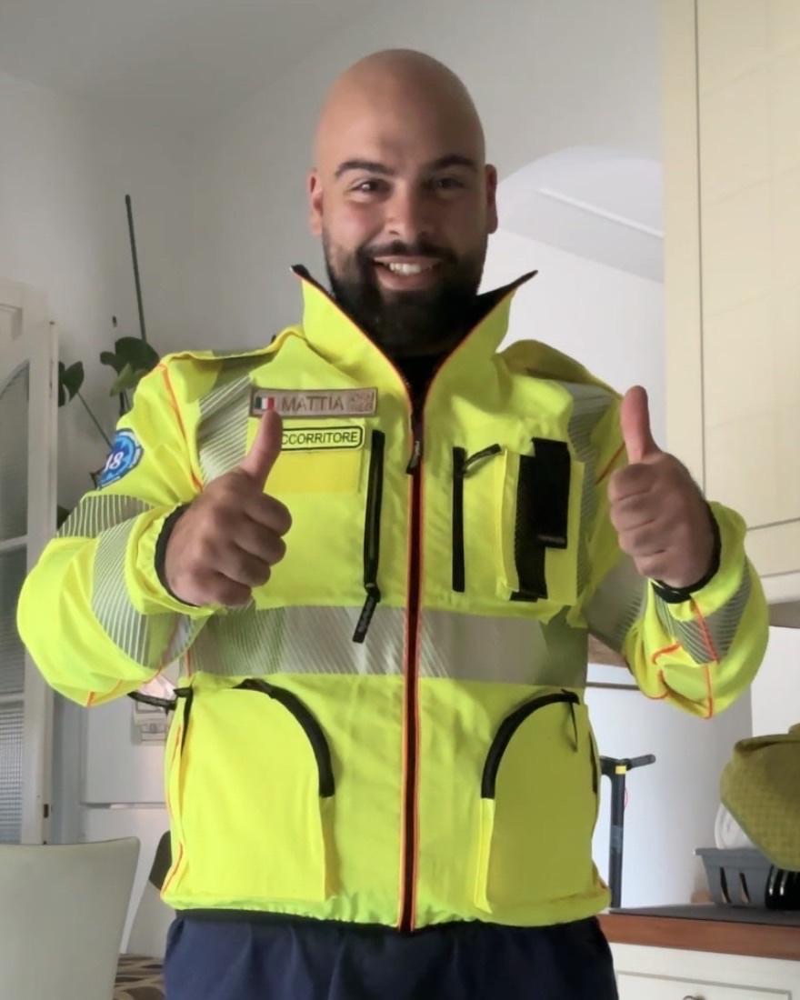

Care homes and facilities
Agreed shifts in nursing homes, residential care, rehabilitation clinics, sheltered housing and day centres.
Qualified care worker – Italian OSS (92/100) · First responder · Self-employed
+39 351 465 8810 · crapanzano.work@gmail.com · linkedin.com/in/mattia-crapanzano · Based in Legnago (VR), Italy
03 Health and social care · Rescue
Qualified care worker (Italian OSS) with over ten years alongside the elderly, people with disabilities and people with addictions. I’m self-employed so I can give every person the time and attention they deserve. As a first responder, I bring the clarity of emergency work into everyday care.

For eight years I cared for a loved one every day. It taught me what no course can: reading unspoken needs, handling fatigue, being there consistently even at the hardest times. I’m a father of two, and I bring that sense of responsibility to every shift.
I work with cooperatives, care homes, rescue associations and families, with agreed weekly availability.
Agreed shifts in nursing homes, residential care, rehabilitation clinics, sheltered housing and day centres.
Personal hygiene, mobility support, oral medication, accompaniment and cognitive stimulation, with regular reports to the family.
First responder shifts on basic life support ambulances, patient transport and medical cover at events.
Continuous care during holidays, trips and stays away from home, even for weeks.
Sudden staff absences or family emergencies: I can step in at short notice.
Experience in therapeutic communities: a non-judgemental approach and support through recovery.
Alongside care work I serve as a first responder, including nights and holidays. It isn’t a separate job: it’s the same skill set, taken where reaction time makes the difference.

First responder on basic life support ambulances: emergencies, scheduled patient transport, event cover.
Pre-hospital care of critical and trauma patients following PTC protocols, secondary transport, evening and night shifts.
Urgent technical rescue with the Italian National Fire Corps, Verona.
On duty I can handle
Equipment: cervical collars, spinal board, scoop stretcher, vacuum mattress, extrication device, pelvic binder. Next step: ambulance driver course.
Qualified care assistant, self-employed, in a residential facility.
Care for elderly residents.
Emergency ambulance shifts, patient transport and event cover, including nights and holidays.
Nursing homes through Orienta S.p.A., Cooperativa Solidarietà Pro and Aldia Cooperativa Sociale, plus private families: hygiene, moving and handling, feeding, pressure sore prevention, oral medication support.
Dependent elderly residents: full personal care, working with nurses and a multidisciplinary team, in daily contact with families.
Adults with acquired brain injury (severe head injury, stroke): 24-hour care, cognitive and motor stimulation, individual rehabilitation plans.
People with drug and alcohol addiction, some with mental health needs: daily support alongside psychotherapists, educators and addiction service doctors.
Personal care, feeding, mobility and prevention, working with the nursing and medical team.
Ongoing support for a young man with disabilities travelling for university: logistics, hygiene, meals and night care, for long periods away from home.
Night care, hygiene, feeding, minor dressings and moving bedridden patients. At the same time, Red Cross volunteer in Jesi with young people with disabilities.
All currently valid. Copies available on request.
For a care home, a loved one or urgent cover: message me and we’ll find the right solution together.